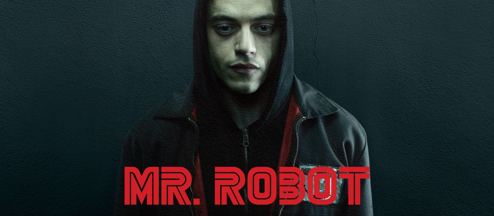

MERHABA, BEN EMRAH
HAKKIMDA
Bilgisayar Mühendisliği 4. Sınıf öğrencisiyim. Siber güvenlik alanında kendimi geliştirmeye odaklanıyorum. Linux sistemleri, ağ güvenliği ve olay müdahale konularında deneyim kazanıyor, sızma testleri ve CTF yarışmalarıyla pratik becerilerimi artırıyorum. Python ve modern teknolojilerle projeler geliştiriyor, güvenlik ve performansı ön planda tutuyorum.

AI Log Anomaly Detection
AUK adını verdiğim Sistem loglarını yapay zeka ile analiz ederek siber tehditleri önceden tespit eden otonom güvenlik motoru.
Chest X-Ray Görüntülerinde Histogram Tabanlı Kontrast İyileştirme ve Pneumonia Tespiti Projem
Bu proje, akciğer röntgeni (Chest X-Ray) görüntülerinde kontrast iyileştirme yöntemlerinin etkisini incelemek ve bu iyileştirmenin derin öğrenme tabanlı pneumonia (zatürre) tespitine katkısını analiz etmek amacıyla geliştirilmiştir. Sistem, uçtan uca bir mimari ile mobil istemci ve sunucu tarafını birlikte ele almaktadır.
Focus Reader
Okuma hızını ve dijital odaklanmayı artırmak için tasarladığım akıllı mobil uygulama.
Python Mini-Tools & Scripts
Otomasyon ve bilgisayarlı görü çözümleri için geliştirdiğim açık kaynak araçlar koleksiyonum.
Sertifikalarım
Siber Güvenlik, Yazılım ve yapay zeka alanında kazandığım sertifikaları burada bulabilirsiniz.
İletişim Bilgilerim
İletişim kurmak isterseniz, aşağıda yer alan bilgilerden ulaşabilirsiniz.